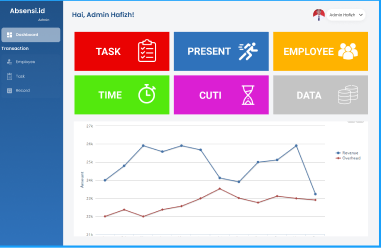
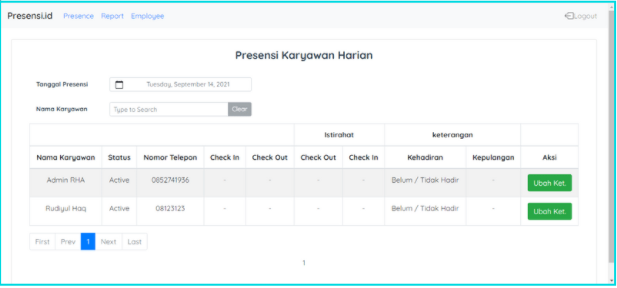
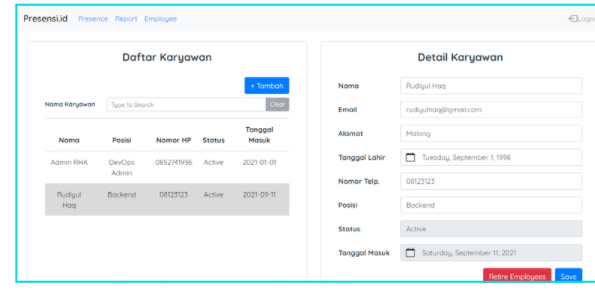
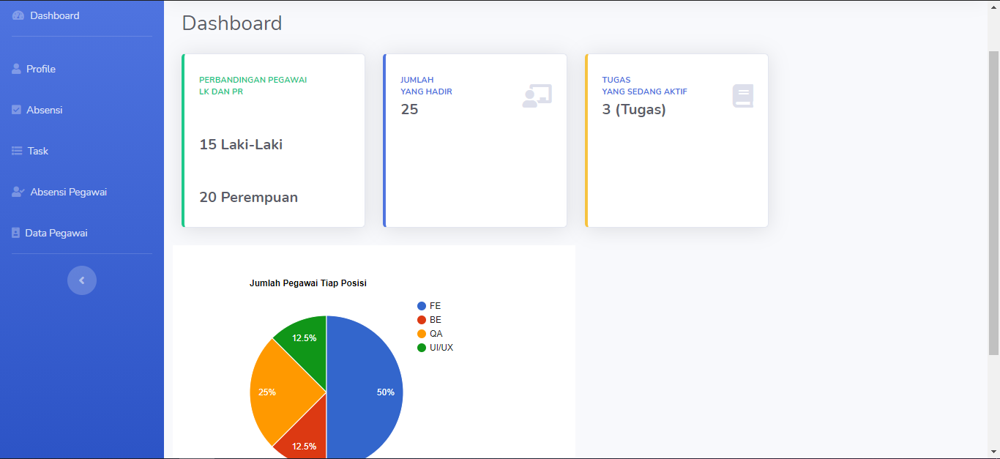

Download API
Download API
Setelah mengunduh API dan masuk ke dalam projek di text editor, buka terminal yang ada di text editor atau command prompt untuk migrasi database dengan perintah :
php artisan migrate
Database yang sudah di migrasi, selanjutnya diisi data dengan perintah :
php artisan seed
Untuk mencoba API Absensi.Id secara lokal jalankan server lokal dengan :
php -S localhost:8000 -t public
Login diperlukan Untuk bisa mengakses fungsi lain dari fitur API. Aplikasi postman bisa digunakan untuk menjalankan routing dari API Absensi.Id, dan untuk login perlu memasukkan username dan juga password dari data yang sudah di masukkan ke database lewat seeder. lalu routing yang dijalankan adalah :
https://localhost:8000/login
Setelah login user akan mendapatkan kode jwt untuk autentikasi user login sebagai admin atau user. Kode jwt digunakan untuk bisa mengakses route dari fitur-fitur API Absensi.Id, seperti :
https://localhost:8000/(nama fitur)
Feature
Aplikasi ini mempunyai beberapa fitur diantaranya adalah record absensi tiap hari dan bulan, otomatisasi record setiap bulan, pencatatan jam kerja dan cuti tiap karyawan, serta kemudahan akses data absen atau karyawan. Aplikasi ini akan berguna bagi Kantor dalam memantau dan melakukan dokumentasi terhadap absensi tiap karyawannya serta menyediakan tempat bagi karyawan agar selalu melakukan laporan jika tidak masuk, lembur ataupun pulang lebih awal. Tidak hanya itu, aplikasi ini juga mempermudah atasan dalam melihat kinerja karyawannya secara langsung.

Task for Employee
Fitur Task for employee adalah fitur yang memungkinkan admin untuk memberikan task atau tugas tertentu kepada pegawai, dan juga memonitor tugas-tugas yang dikerjakan agar sesuai dengan deadline yang ditentukan.
Fitur ini bisa diakses oleh admin dan juga user, namun untuk user hanya menampilkan nama tugas beserta informasi lengkap terkait tugas yang akan dikerjakan. Berbeda dengan admin yang bisa menambahkan tugas dan informasi lengkap beserta menentukan kepada siapa tugas tersebut akan diberikan.

Absensi
Fitur absensi merupakan fitur yang memungkinkan user untuk memberikan laporan kehadiran di tempat kerja. Admin akan melihat data dari kehadiran dari pegawai berupa laporan mingguan dan juga laporan bulanan berupa jumlah pegawai yang aktif dalam seminggu dan satu bulan. Laporan ini berguna bagi admin untuk menentukan pegawai yang memiliki effort tinggi terhadap perusahaan sehingga admin bisa mengoptimalkan pegawai untuk kemajuan perusahaan.
Absensi dibagi menjadi 4, yaitu : absen masuk kantor, absen istirahat, absen kembali dari istirahat, dan absen pulang. Fitur ini dibuat untuk melihat kedisiplinan waktu para pegawai. Saat pegawai melakukan absen ,sistem akan secara otomatis mencatat waktu secara real-time, oleh karena itu pegawai tidak bisa memanipulasi catatan waktu kehadiran dan kepulanagan saat absen.

Employee
Fitur ini hanya bisa diakses oleh admin. Fitur employee digunakan untuk mendata para pegawai yang bekerja dalam perusahaan. Data tersebut berisikan tentang data diri pegawai, posisi di dalam perusahaan, serta status dari pegawai tersebut apakah sedang aktif atau sedang cuti. Fitur ini berfungsi untuk mengelola jumlah pegawai yang bekerja tetap pada jumlah standart optimal dalam menjalankan pekerjaan.

Chart
Setiap minggu sistem akan menyimpan dan akan menghitung persentase dari pegawai yang aktif bekerja, cuti, dan pekerjaan yang telah selesai dikerjakan. Halaman ini berfungsi untuk bahan evaluasi pemilik sekaligus admin untuk mengontrol dan mengelola para pekerja untuk produktif dan sesuai dengan jadwal.